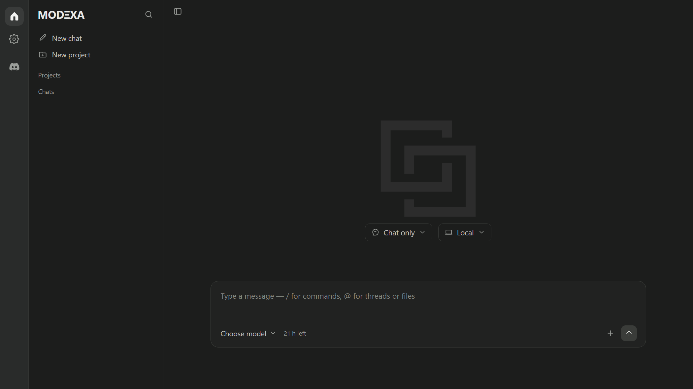
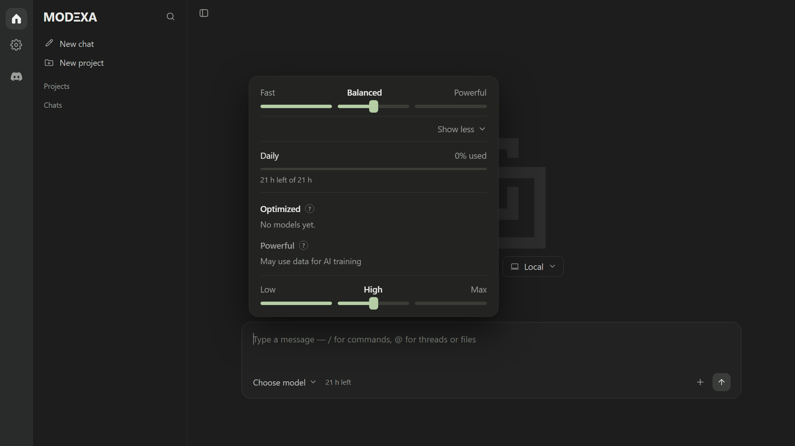

Chats and projects
Keep threads organised per project, switch scope in one click, and reopen any conversation from the sidebar.
Loading latest release…
Chats, projects, skills and MCP servers in one fast desktop app. Pick your model, keep an eye on your daily time, and let every update arrive by itself.

Features
Keep threads organised per project, switch scope in one click, and reopen any conversation from the sidebar.
Every model has a cost multiplier. A 10× model spends ten minutes of daily time for each real minute — free models spend nothing.
Write your own skills with instructions, save them, and reuse them in any project without retyping the prompt.
Paste an mcpServers block, review it, and approve what runs. Nothing starts until you say so.
Dark, Light and OG Shine with a turquoise accent. The choice is remembered between launches.
Signed releases are built by GitHub Actions. The app notices a new version on start and installs it in place.
Model picker
The picker shows speed tiers, today's remaining time and what each model draws before you start. When the 21 hours are gone, usage stops until the next day.

Download
Every installer is built and published automatically from GitHub Releases.
Builds appear here as soon as the first GitHub release is published.
Auto-update
Modexa checks GitHub for a signed release when it starts, and again from Updates in settings. Installing takes one click — no uninstall, no manual download.